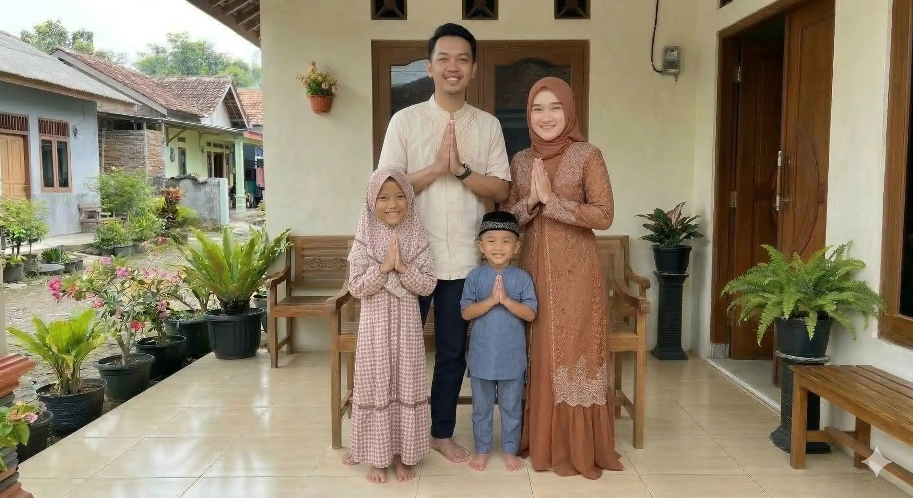
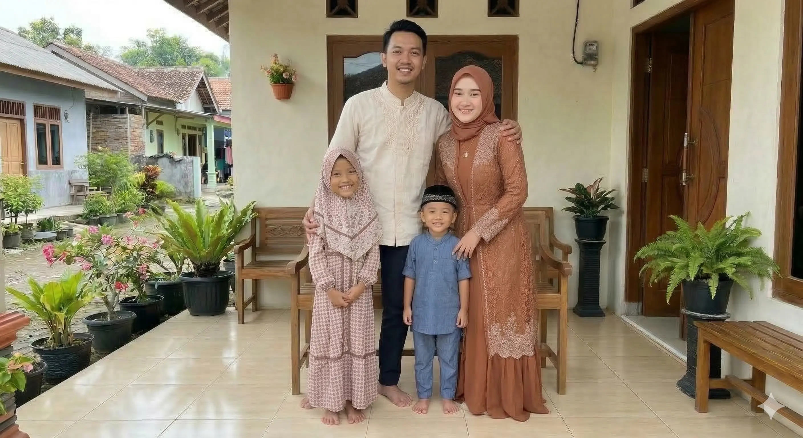
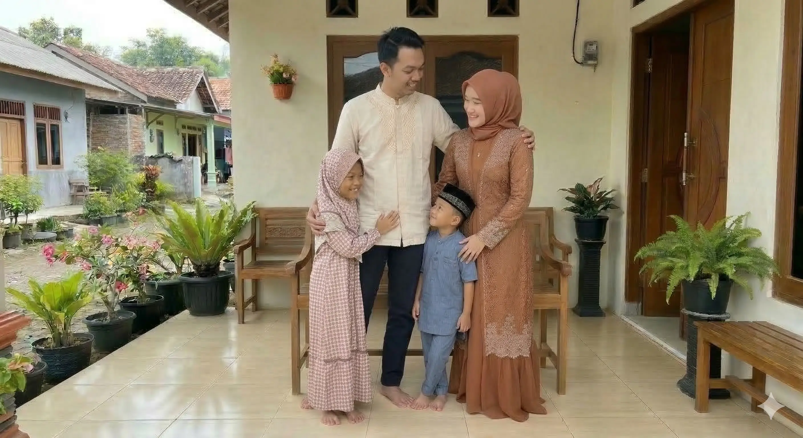

Selamat Hari Raya
Idul Fitri 1447 H
00
Hari
00
Jam
00
Menit
00
Detik
"
Kami sekeluarga mengucapkan selamat hari raya Idul Fitri 1447 Hijriah, mohon maaf lahir dan bathin.
"Momen Lebaran


✦
Natasya Sekeluarga
Mau kasih THR buat bocil? Silahkan scan disini yaa 😊💸